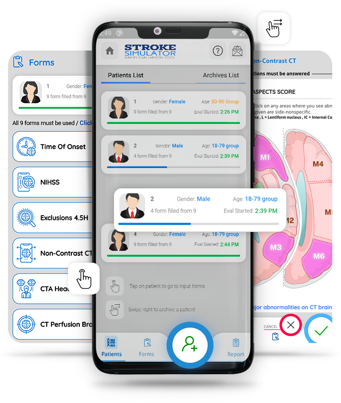
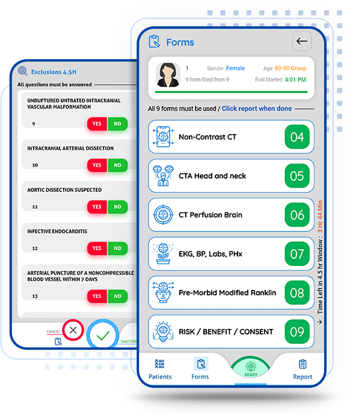
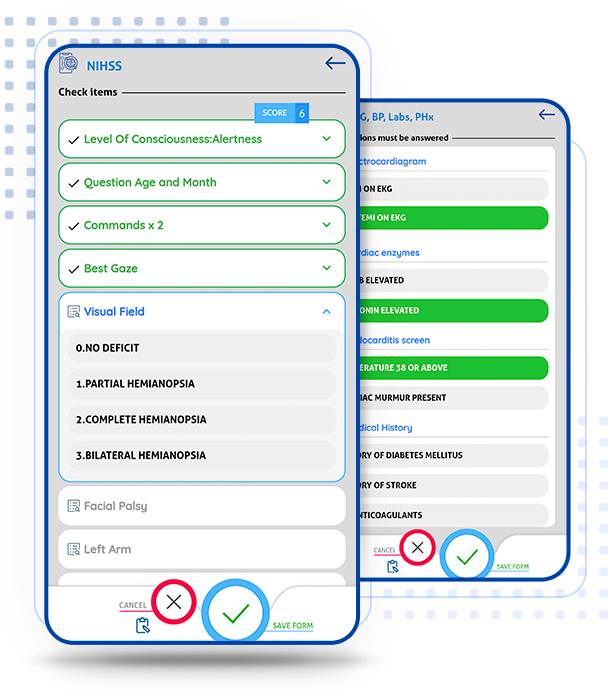
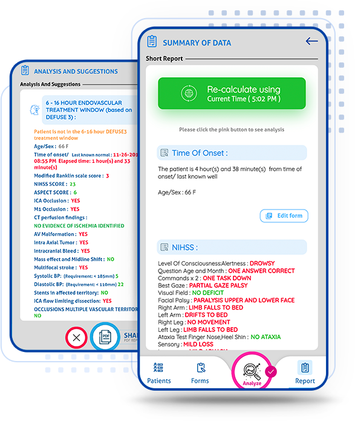
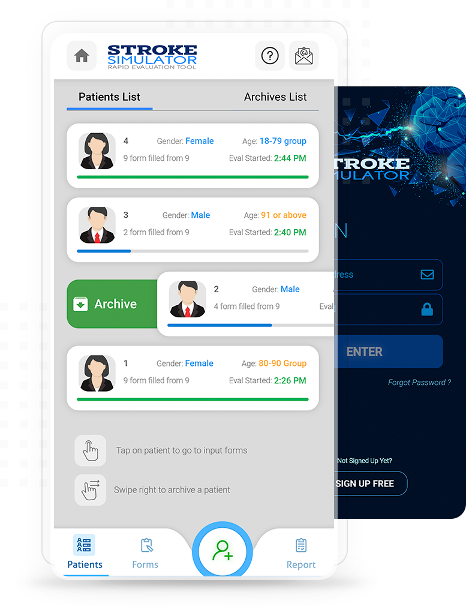

For Educational Purpose. Not for Patient Care
SIMULATE CHAOS-FREE
STROKE EVALUATION IN RECORD TIME !
The stroke simulator app trains you to do a rapid yet comprehensive evaluation of acute stroke, factors in all data pertinent for the 4.5 hr IV TPA window, the 6 hour endovascular window, the 6-16 hr DEFUSE3 endovascular window and the 6-24 hour DAWN endovascular window and walks you through the logical and actionable options. See sample output for a patient simulation.

Why you should use this app?
Let's take a tour

SIMULATOR USAGE MAY HELP FAMILIARIZE YOURSELF WITH COMPLEX GUIDELINES
Lot of the criteria can and do get overlooked or glossed over in an acute stroke situation. The objective of the stroke simulator is to teach yourself to factor in everything into your clinical thinking.
WHAT THE STROKE SIMULATOR DOES FOR YOU
Once you start up the STROKE SIM application, it enables rapid entry of clinical data , without fumbling around with google and stacks of paper and clumsy clunky EMRs . NIHSS documentation and scoring is in record time, test it out. ASPECTS scoring is a thing of beauty on the STROKE SIM, you are presented with a clickable brain image that rapidly calculates the score without holding up things. Inclusion and Exclusion criteria force you to review every point that MUST be reviewed, without glossing over or missing things or assuming things that should not be assumed. CT, CTA, CT perfusion studies, Labs, Modified Ranklin, current expectancy of life, everything that matters is factored in, without wasting time or holding you up. There are things that can be answered 'not done' and critical things that must be done that you cannot get past.


THE EDUCATIONAL VALUE OF STROKE SIMULATOR:
If criteria are not met, it states clearly the logic and rationale of WHY CRITERIA HAVE NOT BEEN MET and again it addresseses the 4.5 hr IV TPA window, the 6 hour endovascular window, the 6-16 hour endovascular window and the 6-24 hour endovascular window.
TEST DRIVE THE STROKE SIM TODAY AND TELL US WHAT ELSE WE CAN ADD
The Stroke Simulator Has One Objective:
To provide a valuable educational tool that makes life easier by organizing the complex algorithms into a format that makes sense without getting you lost in an endless flowchart.
However if your facility is interested in utilizing our software services for live stroke patient care , we are open to collaborating with you, and indeed the logic engine we are using in this educational software can be licensed to you and can be re-programmed under your label, to suit your purposes. In its current form, this software is strictly for educational use and not for clinical use.
We are open to any suggestions for improvement, please email us at service@neurology.us.com
